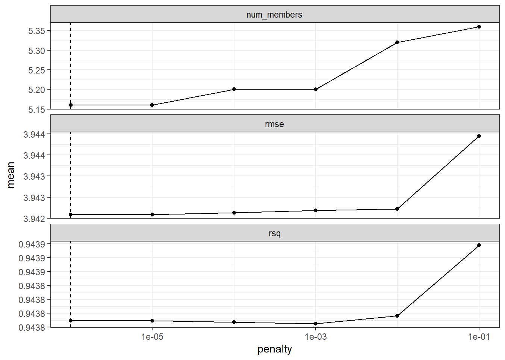
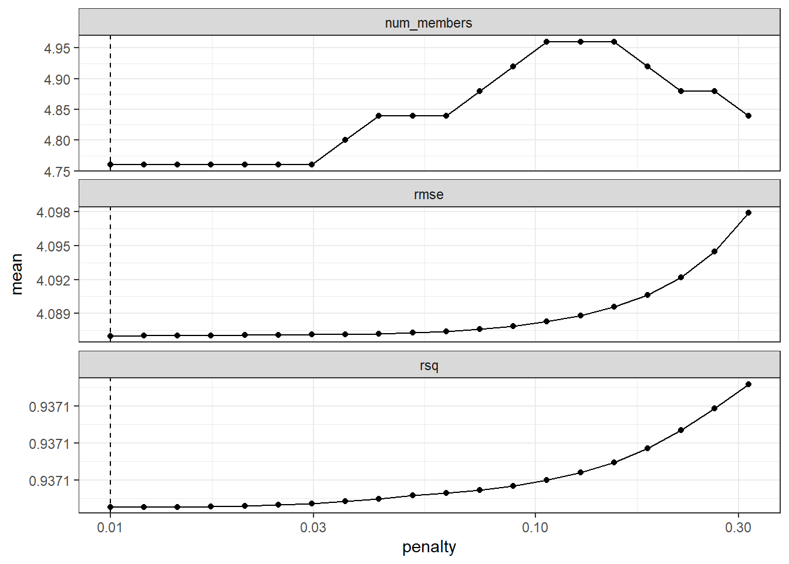
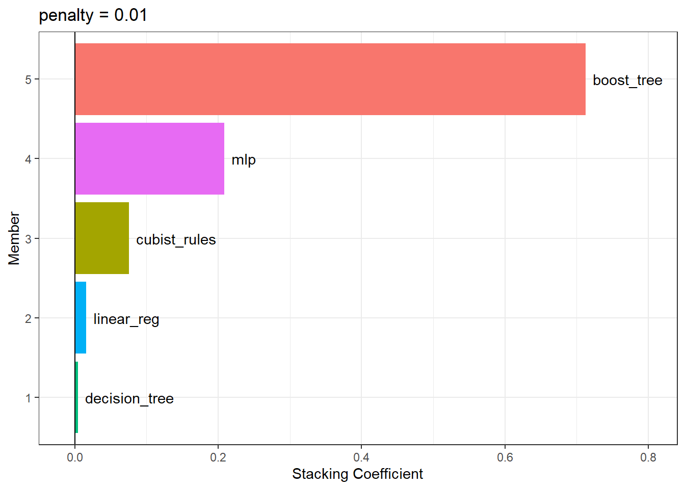

| Sample # | Bagged Tree | MARS 1 | MARS 2 | Cubist 1 | ... | Cubist 25 | ... |
|---|---|---|---|---|---|---|---|
| 1 | 25.18 | 17.92 | 17.15 | 17.79 | 17.82 | ||
| 2 | 5.18 | -1.77 | -0.73 | 2.83 | 3.87 | ||
| 3 | 9.71 | 7.26 | 5.91 | 6.31 | 8.60 | ||
| 4 | 25.21 | 20.93 | 21.52 | 23.72 | 21.61 | ||
| 5 | 6.33 | 1.53 | 0.15 | 3.60 | 4.57 | ||
| 6 | 7.88 | 4.88 | 1.74 | 7.69 | 7.55 |
20 Ensembles of Models
A model ensemble, where the predictions of multiple single learners are aggregated to make one prediction, can produce a high-performance final model. The most popular methods for creating ensemble models are bagging (Breiman 1996a), random forest (Ho 1995; Breiman 2001), and boosting (Freund and Schapire 1997). Each of these methods combines the predictions from multiple versions of the same type of model (e.g., classifications trees). However, one of the earliest methods for creating ensembles is model stacking (Wolpert 1992; Breiman 1996b).
Model stacking combines the predictions for multiple models of any type. For example, a logistic regression, classification tree, and support vector machine can be included in a stacking ensemble.
This chapter shows how to stack predictive models using the stacks package. We’ll re-use the results from Chapter 15 where multiple models were evaluated to predict the compressive strength of concrete mixtures.
The process of building a stacked ensemble is:
- Assemble the training set of hold-out predictions (produced via resampling).
- Create a model to blend these predictions.
- For each member of the ensemble, fit the model on the original training set.
In subsequent sections, we’ll describe this process. However, before proceeding, we’ll clarify some nomenclature for the variations of what “the model” can mean. This can quickly become an overloaded term when we are working on a complex modeling analysis! Let’s consider the multilayer perceptron (MLP) model (a.k.a. neural network) created in Chapter 15.
In general, we’ll talk about an MLP model as the type of model. Linear regression and support vector machines are other model types.
Tuning parameters are an important aspect of a model. Back in Chapter 15, the MLP model was tuned over 25 tuning parameter values. In the previous chapters, we’ve called these candidate tuning parameter values or model configurations. In literature on ensembling these have also been called the base models.
We’ll use the term candidate members to describe the possible model configurations (of all model types) that might be included in the stacking ensemble.
This means that a stacking model can include different types of models (e.g., trees and neural networks) as well as different configurations of the same model (e.g., trees with different depths).
20.1 Creating the Training Set for Stacking
The first step for building a stacked ensemble relies on the assessment set predictions from a resampling scheme with multiple splits. For each data point in the training set, stacking requires an out-of-sample prediction of some sort. For regression models, this is the predicted outcome. For classification models, the predicted classes or probabilities are available for use, although the latter contains more information than the hard class predictions. For a set of models, a data set is assembled where rows are the training set samples and columns are the out-of-sample predictions from the set of multiple models.
Back in Chapter 15, we used five repeats of 10-fold cross-validation to resample the data. This resampling scheme generates five assessment set predictions for each training set sample. Multiple out-of-sample predictions can occur in several other resampling techniques (e.g., bootstrapping). For the purpose of stacking, any replicate predictions for a data point in the training set are averaged so that there is a single prediction per training set sample per candidate member.
Simple validation sets can also be used with stacking since tidymodels considers this to be a single resample.
For the concrete example, the training set used for model stacking has columns for all of the candidate tuning parameter results. Table 20.1 presents the first six rows and selected columns.
There is a single column for the bagged tree model since it has no tuning parameters. Also, recall that MARS was tuned over a single parameter (the product degree) with two possible configurations, so this model is represented by two columns. Most of the other models have 25 corresponding columns, as shown for Cubist in this example.
For classification models, the candidate prediction columns would be predicted class probabilities. Since these columns add to one for each model, the probabilities for one of the classes can be left out.
To summarize where we are so far, the first step to stacking is to assemble the assessment set predictions for the training set from each candidate model. We can use these assessment set predictions to move forward and build a stacked ensemble.
To start ensembling with the stacks package, create an empty data stack using the stacks() function and then add candidate models. Recall that we used workflow sets to fit a wide variety of models to these data. We’ll use the racing results:
race_results
## # A workflow set/tibble: 12 × 4
## wflow_id info option result
## <chr> <list> <list> <list>
## 1 MARS <tibble [1 × 4]> <opts[3]> <race[+]>
## 2 CART <tibble [1 × 4]> <opts[3]> <race[+]>
## 3 CART_bagged <tibble [1 × 4]> <opts[3]> <rsmp[+]>
## 4 RF <tibble [1 × 4]> <opts[3]> <race[+]>
## 5 boosting <tibble [1 × 4]> <opts[3]> <race[+]>
## 6 Cubist <tibble [1 × 4]> <opts[3]> <race[+]>
## # ℹ 6 more rowsIn this case, our syntax is:
library(tidymodels)
library(stacks)
tidymodels_prefer()
concrete_stack <-
stacks() %>%
add_candidates(race_results)
concrete_stack
## # A data stack with 12 model definitions and 18 candidate members:
## # MARS: 1 model configuration
## # CART: 1 model configuration
## # CART_bagged: 1 model configuration
## # RF: 1 model configuration
## # boosting: 1 model configuration
## # Cubist: 1 model configuration
## # SVM_radial: 1 model configuration
## # SVM_poly: 1 model configuration
## # KNN: 3 model configurations
## # neural_network: 1 model configuration
## # full_quad_linear_reg: 5 model configurations
## # full_quad_KNN: 1 model configuration
## # Outcome: compressive_strength (numeric)Recall that racing methods (Section 13.5.5) are more efficient since they might not evaluate all configurations on all resamples. Stacking requires that all candidate members have the complete set of resamples. add_candidates() includes only the model configurations that have complete results.
Why use the racing results instead of the full set of candidate models contained in grid_results? Either can be used. We found better performance for these data using the racing results. This might be due to the racing method pre-selecting the best model(s) from the larger grid.
If we had not used the workflowsets package, objects from the tune and finetune could also be passed to add_candidates(). This can include both grid and iterative search objects.
20.2 Blend the Predictions
The training set predictions and the corresponding observed outcome data are used to create a meta-learning model where the assessment set predictions are the predictors of the observed outcome data. Meta-learning can be accomplished using any model. The most commonly used model is a regularized generalized linear model, which encompasses linear, logistic, and multinomial models. Specifically, regularization via the lasso penalty (Tibshirani 1996), which uses shrinkage to pull points toward a central value, has several advantages:
- Using the lasso penalty can remove candidates (and sometimes whole model types) from the ensemble.
- The correlation between ensemble candidates tends to be very high, and regularization helps alleviate this issue.
Breiman (1996b) also suggested that, when a linear model is used to blend the predictions, it might be helpful to constrain the blending coefficients to be nonnegative. We have generally found this to be good advice and it is the default for the stacks package (but it can be changed via an optional argument).
Since our outcome is numeric, linear regression is used for the metamodel. Fitting the metamodel is as straightforward as using:
set.seed(2001)
ens <- blend_predictions(concrete_stack)This evaluates the meta-learning model over a predefined grid of lasso penalty values and uses an internal resampling method to determine the best value. The autoplot() method, shown in Figure 20.1, helps us understand if the default penalization method was sufficient:
autoplot(ens)
autoplot() method on the blended stacks objectThe top panel of Figure 20.1 shows the average number of candidate ensemble members retained by the meta-learning model. We can see that the number of members is fairly constant and, as it increases, the RMSE also increases.
The default range may not have served us well here. To evaluate the meta-learning model with larger penalties, let’s pass an additional option:
set.seed(2002)
ens <- blend_predictions(concrete_stack, penalty = 10^seq(-2, -0.5, length = 20))Now, in Figure 20.2, we see a range where the ensemble model becomes worse than with our first blend (but not by much). The \(R^2\) values increase with more members and larger penalties.
autoplot(ens)
autoplot() method on the updated blended stacks objectWhen blending predictions using a regression model, it is common to constrain the blending parameters to be nonnegative. For these data, this constraint has the effect of eliminating many of the potential ensemble members; even at fairly low penalties, the ensemble is limited to a fraction of the original eighteen.
The penalty value associated with the smallest RMSE was 0.01. Printing the object shows the details of the meta-learning model:
ens
## ── A stacked ensemble model ─────────────────────────────────────
##
##
## Out of 18 possible candidate members, the ensemble retained 5.
##
## Penalty: 0.01.
##
## Mixture: 1.
##
##
## The 5 highest weighted members are:
## # A tibble: 5 × 3
## member type weight
## <chr> <chr> <dbl>
## 1 boosting_1_16 boost_tree 0.712
## 2 neural_network_1_17 mlp 0.208
## 3 Cubist_1_25 cubist_rules 0.0759
## 4 full_quad_linear_reg_1_16 linear_reg 0.0161
## 5 CART_1_05 decision_tree 0.00476
##
## Members have not yet been fitted with `fit_members()`.The regularized linear regression meta-learning model contained five blending coefficients across five types of models. The autoplot() method can be used again to show the contributions of each model type, to produce Figure 20.3.

The boosted tree and neural network models have the largest contributions to the ensemble. For this ensemble, the outcome is predicted with the equation:
\[\begin{align} \text{ensemble prediction} &=-0.62 \\ +&0.71 \times \text{boost tree prediction} \notag \\ +&0.21 \times \text{mlp prediction} \notag \\ +&0.076 \times \text{cubist rules prediction} \notag \\ +&0.016 \times \text{linear reg prediction} \notag \\ +&0.0048 \times \text{decision tree prediction} \notag \end{align}\]
where the predictors in the equation are the predicted compressive strength values from those models.
20.3 Fit the Member Models
The ensemble contains five candidate members, and we now know how their predictions can be blended into a final prediction for the ensemble. However, these individual model fits have not yet been created. To be able to use the stacking model, five additional model fits are required. These use the entire training set with the original predictors.
The five models to be fit are:
boosting: number of trees = 1800, minimal node size = 25, tree depth = 4, learning rate = 0.109, minimum loss reduction = 9.84e-10, and proportion of observations sampled = 0.85
Cubist: number of committees = 98 and number of nearest neighbors = 2
CART: cost-complexity parameter = 5e-08 and minimal node size = 3
linear regression (quadratic features): amount of regularization = 6.28e-09 and proportion of lasso penalty = 0.636
neural network: number of hidden units = 26, amount of regularization = 0.0149, and number of epochs = 203
The stacks package has a function, fit_members(), that trains and returns these models:
ens <- fit_members(ens)This updates the stacking object with the fitted workflow objects for each member. At this point, the stacking model can be used for prediction.
20.4 Test Set Results
Since the blending process used resampling, we can estimate that the ensemble with five members had an estimated RMSE of 4.09. Recall from Chapter 15 that the best boosted tree had a test set RMSE of 3.46. How will the ensemble model compare on the test set? We can predict() to find out:
This is moderately better than our best single model. It is fairly common for stacking to produce incremental benefits when compared to the best single model.
20.5 Chapter Summary
This chapter demonstrated how to combine different models into an ensemble for better predictive performance. The process of creating the ensemble can automatically eliminate candidate models to find a small subset that improves performance. The stacks package has a fluent interface for combining resampling and tuning results into a meta-model.